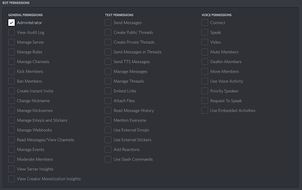

Welcome to creating your first Discord bot using JavaScript! This tutorial will teach you everything, from creating the account for the bot, to writing a super simple command. Sometimes coding for the first time can be very intimidating but I hope to make this tutorial as open as possible, even for somebody who has never written a single line of code.
Creating the bot
The first part of creating a bot in Discord is going to be creating the account for the bot. Go to https://discord.com/developers and sign into your Discord account

After logging in, click “New Application” in the top right corner of the page

Then, create a name for your bot and agree to the terms of service and press create.

Then you’ll see a page similar to this where you can add a profile picture, change the name of your bot,and add to your About Me section of the bot’s profile. On the left side, click on the “bot” tab and press “add bot” and “Yes, do it!”. Don’t worry about the warning.


Now we’ll allow the bot to read messages sent. Scroll down on the bot page and turn on “message content intent” and save the changes.

Next you’ll need to retrieve your bot’s “token”, this token is essentially the login for your bot DO NOT SHARE THIS. If somebody else gets a hold of your bot token they could use it maliciously. Copy your token and save it for later
Next we’ll be inviting your bot to your server, on the menu on the left, open the OAuth2 tab and select the URL Generator. You will see a long list of scopes, the only one you’ll need to check off is the “bot”


Next, you’ll select your bot permissions. You can modify this as much as you need but to make it as simple as possible, add the “administrator” permission. This will grant all permissions to give your bot complete access to the server.

Then, copy the generator URL at the bottom and paste it into your browser. Then invite it to the server you would like. You will then authorize the bot’s permissions.


You've now added the bot to your server!